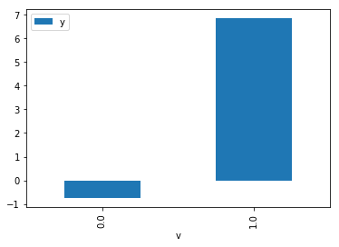

[1]:
import dowhy.datasets
from dowhy.do_samplers.kernel_density_sampler import KernelDensitySampler
from dowhy.do_why import CausalModel
from dowhy.api.causal_data_frame import CausalDataFrame
import numpy as np
import pandas as pd
from statsmodels.api import OLS
[2]:
data = dowhy.datasets.linear_dataset(beta=5,
num_common_causes=1,
num_instruments = 0,
num_samples=1000,
treatment_is_binary=True)
[3]:
data['dot_graph'] = 'digraph { v ->y;X0-> v;X0-> y;}'
df = data['df']
df['y'] = df['y'] + np.random.normal(size=len(df)) # without noise, the variance in Y|X, Z is zero, and mcmc fails.
[4]:
cdf = CausalDataFrame(df)
cdf.causal.do(x={'v': 1},
variable_types={'v': 'b', 'y': 'c', 'X0': 'c'},
outcome='y',
method='mcmc',
common_causes=['X0'],
keep_original_treatment=True,
proceed_when_unidentifiable=True).groupby('v').mean().plot(y='y', kind='bar')
WARNING:dowhy.do_why:Causal Graph not provided. DoWhy will construct a graph based on data inputs.
INFO:dowhy.causal_identifier:Common causes of treatment and outcome:{'U', 'X0'}
INFO:dowhy.causal_identifier:Instrumental variables for treatment and outcome:[]
['X0']
yes
{'observed': 'yes'}
Model to find the causal effect of treatment v on outcome y
{'label': 'Unobserved Confounders', 'observed': 'no'}
All common causes are observed. Causal effect can be identified.
McmcSampler
INFO:dowhy.do_sampler:Using McmcSampler for do sampling.
treatments ['v']
backdoor ['X0']
INFO:pymc3:Auto-assigning NUTS sampler...
INFO:pymc3:Initializing NUTS using jitter+adapt_diag...
INFO:pymc3:Multiprocess sampling (4 chains in 4 jobs)
INFO:pymc3:NUTS: [y_sd, beta_y, v_sd, beta_v]
Sampling 4 chains: 100%|██████████| 8000/8000 [00:05<00:00, 1550.20draws/s]
[4]:
<matplotlib.axes._subplots.AxesSubplot at 0x7feaac626550>

[6]:
cdf = CausalDataFrame(df)
[9]:
cdf_1 = cdf.causal.do(x={'v': 1},
variable_types={'v': 'b', 'y': 'c', 'X0': 'c'},
outcome='y',
method='mcmc',
dot_graph=data['dot_graph'],
proceed_when_unidentifiable=True)
cdf_0 = cdf.causal.do(x={'v': 0},
variable_types={'v': 'b', 'y': 'c', 'X0': 'c'},
outcome='y',
method='mcmc',
dot_graph=data['dot_graph'],
proceed_when_unidentifiable=True,
use_previous_sampler=True)
INFO:dowhy.causal_identifier:Common causes of treatment and outcome:{'U', 'X0'}
INFO:dowhy.causal_identifier:Instrumental variables for treatment and outcome:[]
INFO:dowhy.do_sampler:Using McmcSampler for do sampling.
Error: Pygraphviz cannot be loaded. No module named 'pygraphviz'
Trying pydot ...
['X0']
yes
{'observed': 'yes'}
Model to find the causal effect of treatment v on outcome y
{'label': 'Unobserved Confounders', 'observed': 'no'}
All common causes are observed. Causal effect can be identified.
McmcSampler
treatments ['v']
backdoor ['X0']
INFO:pymc3:Auto-assigning NUTS sampler...
INFO:pymc3:Initializing NUTS using jitter+adapt_diag...
INFO:pymc3:Multiprocess sampling (4 chains in 4 jobs)
INFO:pymc3:NUTS: [y_sd, beta_y, v_sd, beta_v]
Sampling 4 chains: 100%|██████████| 8000/8000 [00:05<00:00, 1479.09draws/s]
INFO:dowhy.causal_identifier:Common causes of treatment and outcome:{'U', 'X0'}
INFO:dowhy.causal_identifier:Instrumental variables for treatment and outcome:[]
{'label': 'Unobserved Confounders', 'observed': 'no'}
All common causes are observed. Causal effect can be identified.
McmcSampler
[10]:
cdf_0
[10]:
| X0 | v | y | |
|---|---|---|---|
| 0 | -0.679571 | 0 | -0.540989 |
| 1 | -0.243537 | 0 | -0.816734 |
| 2 | -0.195101 | 0 | -0.420884 |
| 3 | 0.923288 | 0 | 0.543097 |
| 4 | 0.389773 | 0 | 2.000232 |
| 5 | 0.345340 | 0 | -0.235523 |
| 6 | 0.539989 | 0 | -0.191927 |
| 7 | 1.294383 | 0 | 1.841164 |
| 8 | -0.557656 | 0 | -1.179258 |
| 9 | -0.581319 | 0 | -1.585532 |
| 10 | 0.089578 | 0 | 0.371095 |
| 11 | 0.826961 | 0 | 3.333531 |
| 12 | -0.671221 | 0 | -2.539698 |
| 13 | 0.986791 | 0 | 1.801363 |
| 14 | 1.594109 | 0 | 2.040565 |
| 15 | -0.245527 | 0 | -0.289327 |
| 16 | 0.178187 | 0 | 0.141852 |
| 17 | 2.024924 | 0 | 2.980681 |
| 18 | -1.760241 | 0 | -3.197609 |
| 19 | 1.911770 | 0 | 4.160535 |
| 20 | 0.411533 | 0 | 0.891029 |
| 21 | -1.601890 | 0 | -3.900897 |
| 22 | -0.779602 | 0 | -3.024336 |
| 23 | 2.117118 | 0 | 3.186386 |
| 24 | 0.515388 | 0 | 1.042302 |
| 25 | 0.195795 | 0 | -1.043282 |
| 26 | 0.112839 | 0 | 0.106886 |
| 27 | 0.508712 | 0 | -0.138736 |
| 28 | 1.449329 | 0 | 2.797328 |
| 29 | 0.948285 | 0 | 2.310356 |
| ... | ... | ... | ... |
| 970 | 0.733012 | 0 | 2.388490 |
| 971 | -0.970542 | 0 | -2.013554 |
| 972 | 1.451770 | 0 | 3.385053 |
| 973 | 0.086223 | 0 | -0.224399 |
| 974 | 0.062156 | 0 | -0.295354 |
| 975 | 1.178053 | 0 | 1.891484 |
| 976 | 0.038045 | 0 | 0.491061 |
| 977 | -0.420454 | 0 | -1.158550 |
| 978 | 0.498168 | 0 | 0.916308 |
| 979 | 0.179320 | 0 | 1.385915 |
| 980 | -1.081955 | 0 | -4.169600 |
| 981 | 0.792726 | 0 | 0.799942 |
| 982 | 0.817159 | 0 | 1.660682 |
| 983 | 0.277124 | 0 | 0.915327 |
| 984 | 1.139441 | 0 | 2.971099 |
| 985 | 2.636305 | 0 | 4.528907 |
| 986 | 0.849081 | 0 | 0.664671 |
| 987 | 2.231701 | 0 | 4.656510 |
| 988 | 1.065030 | 0 | 2.355032 |
| 989 | -0.134438 | 0 | 0.298530 |
| 990 | -2.540774 | 0 | -5.619055 |
| 991 | -0.368138 | 0 | -0.208480 |
| 992 | 1.050256 | 0 | 1.603709 |
| 993 | 0.669631 | 0 | 0.961663 |
| 994 | -0.508734 | 0 | -0.771802 |
| 995 | -0.103255 | 0 | -0.251265 |
| 996 | -0.906700 | 0 | -2.711775 |
| 997 | 0.156403 | 0 | 0.602863 |
| 998 | -0.276539 | 0 | -0.986462 |
| 999 | 0.608260 | 0 | 0.644999 |
1000 rows × 3 columns
[11]:
cdf_1
[11]:
| X0 | v | y | |
|---|---|---|---|
| 0 | -0.679571 | 1 | 3.545042 |
| 1 | -0.243537 | 1 | 4.665001 |
| 2 | -0.195101 | 1 | 4.499220 |
| 3 | 0.923288 | 1 | 6.673522 |
| 4 | 0.389773 | 1 | 5.976617 |
| 5 | 0.345340 | 1 | 5.553557 |
| 6 | 0.539989 | 1 | 6.375131 |
| 7 | 1.294383 | 1 | 7.499560 |
| 8 | -0.557656 | 1 | 3.655596 |
| 9 | -0.581319 | 1 | 4.275826 |
| 10 | 0.089578 | 1 | 5.298058 |
| 11 | 0.826961 | 1 | 6.531107 |
| 12 | -0.671221 | 1 | 3.541304 |
| 13 | 0.986791 | 1 | 7.004788 |
| 14 | 1.594109 | 1 | 7.981339 |
| 15 | -0.245527 | 1 | 4.159227 |
| 16 | 0.178187 | 1 | 5.359598 |
| 17 | 2.024924 | 1 | 9.260993 |
| 18 | -1.760241 | 1 | 1.503151 |
| 19 | 1.911770 | 1 | 8.763278 |
| 20 | 0.411533 | 1 | 6.014290 |
| 21 | -1.601890 | 1 | 1.895632 |
| 22 | -0.779602 | 1 | 3.509766 |
| 23 | 2.117118 | 1 | 9.529310 |
| 24 | 0.515388 | 1 | 5.812637 |
| 25 | 0.195795 | 1 | 5.080119 |
| 26 | 0.112839 | 1 | 5.088389 |
| 27 | 0.508712 | 1 | 5.831991 |
| 28 | 1.449329 | 1 | 8.066816 |
| 29 | 0.948285 | 1 | 6.386133 |
| ... | ... | ... | ... |
| 970 | 0.733012 | 1 | 6.507144 |
| 971 | -0.970542 | 1 | 3.359742 |
| 972 | 1.451770 | 1 | 7.869123 |
| 973 | 0.086223 | 1 | 4.587526 |
| 974 | 0.062156 | 1 | 5.341651 |
| 975 | 1.178053 | 1 | 7.150807 |
| 976 | 0.038045 | 1 | 4.709112 |
| 977 | -0.420454 | 1 | 3.717059 |
| 978 | 0.498168 | 1 | 5.969144 |
| 979 | 0.179320 | 1 | 5.106763 |
| 980 | -1.081955 | 1 | 3.072383 |
| 981 | 0.792726 | 1 | 6.142553 |
| 982 | 0.817159 | 1 | 6.614257 |
| 983 | 0.277124 | 1 | 5.478525 |
| 984 | 1.139441 | 1 | 7.124206 |
| 985 | 2.636305 | 1 | 9.761611 |
| 986 | 0.849081 | 1 | 6.316136 |
| 987 | 2.231701 | 1 | 9.592429 |
| 988 | 1.065030 | 1 | 6.767247 |
| 989 | -0.134438 | 1 | 4.681228 |
| 990 | -2.540774 | 1 | 0.112361 |
| 991 | -0.368138 | 1 | 4.395120 |
| 992 | 1.050256 | 1 | 7.209847 |
| 993 | 0.669631 | 1 | 6.251246 |
| 994 | -0.508734 | 1 | 4.251908 |
| 995 | -0.103255 | 1 | 5.060815 |
| 996 | -0.906700 | 1 | 3.055053 |
| 997 | 0.156403 | 1 | 5.534543 |
| 998 | -0.276539 | 1 | 4.520962 |
| 999 | 0.608260 | 1 | 6.146062 |
1000 rows × 3 columns
[13]:
cdf_1 = cdf.causal.do(x={'v': 1},
variable_types={'v': 'b', 'y': 'c', 'X0': 'c'},
outcome='y',
method='mcmc',
common_causes=['X0'],
proceed_when_unidentifiable=True,
use_previous_sampler=False)
cdf_0 = cdf.causal.do(x={'v': 0},
variable_types={'v': 'b', 'y': 'c', 'X0': 'c'},
outcome='y',
method='mcmc',
common_causes=['X0'],
proceed_when_unidentifiable=True,
use_previous_sampler=True)
WARNING:dowhy.do_why:Causal Graph not provided. DoWhy will construct a graph based on data inputs.
INFO:dowhy.causal_identifier:Common causes of treatment and outcome:{'U', 'X0'}
INFO:dowhy.causal_identifier:Instrumental variables for treatment and outcome:[]
INFO:dowhy.do_sampler:Using McmcSampler for do sampling.
['X0']
yes
{'observed': 'yes'}
Model to find the causal effect of treatment v on outcome y
{'label': 'Unobserved Confounders', 'observed': 'no'}
All common causes are observed. Causal effect can be identified.
McmcSampler
treatments ['v']
backdoor ['X0']
INFO:pymc3:Auto-assigning NUTS sampler...
INFO:pymc3:Initializing NUTS using jitter+adapt_diag...
INFO:pymc3:Multiprocess sampling (4 chains in 4 jobs)
INFO:pymc3:NUTS: [y_sd, beta_y, v_sd, beta_v]
Sampling 4 chains: 100%|██████████| 8000/8000 [00:08<00:00, 919.62draws/s]
INFO:dowhy.causal_identifier:Common causes of treatment and outcome:{'U', 'X0'}
INFO:dowhy.causal_identifier:Instrumental variables for treatment and outcome:[]
{'label': 'Unobserved Confounders', 'observed': 'no'}
All common causes are observed. Causal effect can be identified.
McmcSampler
[ ]:
(cdf_1['y'] - cdf_0['y']).mean()
[ ]:
1.96*(cdf_1['y'] - cdf_0['y']).std() / np.sqrt(len(cdf))
[ ]:
model = OLS(df['y'], df[['X0', 'v']])
result = model.fit()
result.summary()
[ ]:
cdf_1
[ ]:
cdf_0
[ ]:
cdf_do = cdf.causal.do(x={'v': 0},
variable_types={'v': 'b', 'y': 'c', 'X0': 'c'},
outcome='y',
method='mcmc',
common_causes=['X0'],
proceed_when_unidentifiable=True,
keep_original_treatment=True)
[ ]:
cdf_do
[ ]: